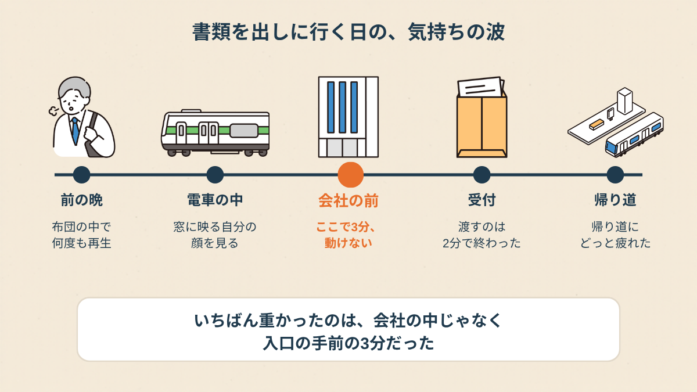
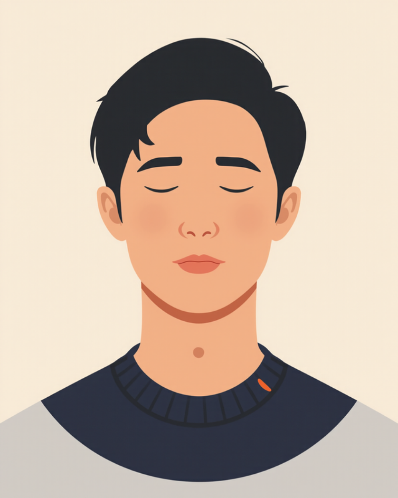
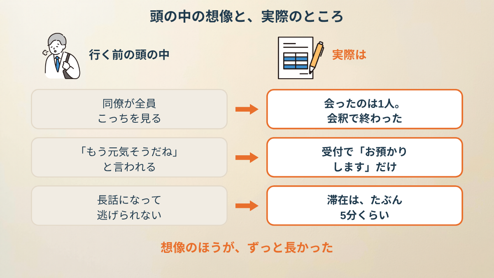
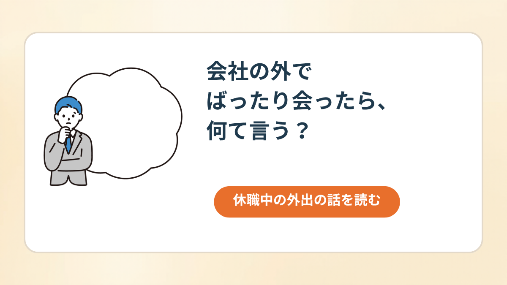
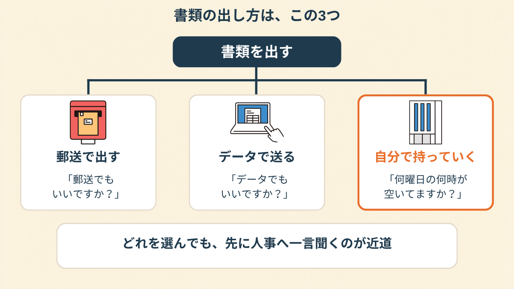
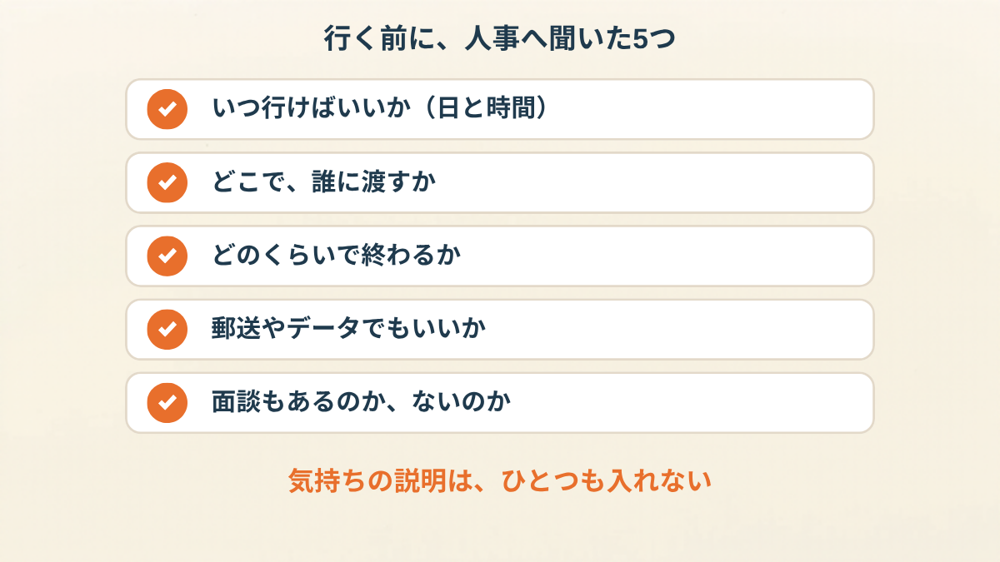
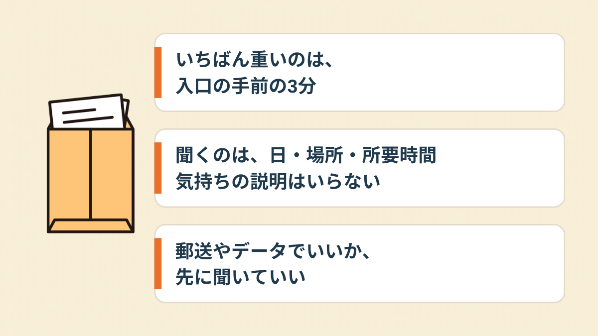

人事からのメールを読んで、私は画面を閉じました。
書類は1枚。受付に渡すだけ。それなのに、その日から胃のあたりが重くなりました。
前の晩から、もう会社に着いていた
行く日の前の晩、布団の中で、何度も場面を作り直しました。
エレベーターで同僚と鉢合わせたら。廊下ですれ違ったら。
「久しぶり、元気？」って言われたら、私は何て返すんだろう、って。
実際に会社に行くのは、翌日の10分くらい。
なのに頭の中では、前の晩からもう、会社の中を歩いていました。
朝は、いつもより早く目が覚めました。
スーツじゃなくて私服で行っていいのか、とか、
そんなことまで気になって、結局いちばん無難な服を出して。

会社の前で、3分動けなかった
電車の中では、なんとか平気でした。
駅に着いて、歩いて、見慣れたビルが見えて。
そこで、足が止まりました。
自動ドアまで、あと10歩くらい。
でも、その10歩が出ない。
スマホを見るふりをして、道の端に立って、ただ3分くらいそこにいました。
誰かに「何してるの」と言われたわけじゃないんです。
ただ、あのドアを通ったら、「休職中の人」として見られる側に戻る気がして。
「私は、会社の最寄り駅で降りたところで、いったん改札の外のベンチに座りました。体が『行きたくない』って言ってるのが、はっきり分かって。書類は出したいのに、足だけが言うことを聞かなかったです」

受付は、2分で終わった
結局、息を一回だけ深く吸って、ドアを通りました。
受付にいたのは、知らない顔の方。
封筒を出して、「人事の○○さん宛てです」と言ったら、「お預かりしますね」の一言で終わり。
所要時間は、たぶん2分。
同僚には、1人だけ会いました。エレベーターの前で、会釈だけ。
「久しぶり」も「元気？」もなくて、拍子抜けするくらい静かでした。

帰り道、駅のホームで、急に力が抜けました。
疲れたというより、前の晩から張りつめていたものが、やっと終わった感じ。
想像のほうが、ずっと長かったんです。

休職中の外出の話を読む →次は、行く前に人事へ5つ聞いた
あとから知ったんですが、書類の出し方は「自分で持っていく」だけじゃありませんでした。
郵送でいい会社もあるし、データで送れる場合もある。
私は、聞く前に「持参しかない」と決めつけていたんです。

次に書類を出す日が来たとき、私は電話する前に、聞くことを紙に5行だけ書きました。
「いつ、何時ごろに行けばいいか」「どこで、誰に渡すか」「どのくらい時間がかかるか」「郵送やデータでもいいか」「面談はあるか」。
気持ちの説明は、ひとつも入れませんでした。

「人事に聞いたら、受付に預けるだけでいいって言われて。面談があると思い込んでたのは、私だけでした。聞く前の不安が、いちばん大きかったです」
人事に電話したら、返事はあっさりしていました。
「受付で大丈夫ですよ。午前中なら人も少ないです」って。
たった1本の電話で、前の晩のいろいろが、少し軽くなった。

この記事に、聞いてみたいことはありますか？
「自分の場合はどうなんだろう」と思ったことを、気軽に書いてみてください。いただいた質問は個別にお返事したうえで、匿名で記事にすることがあります。